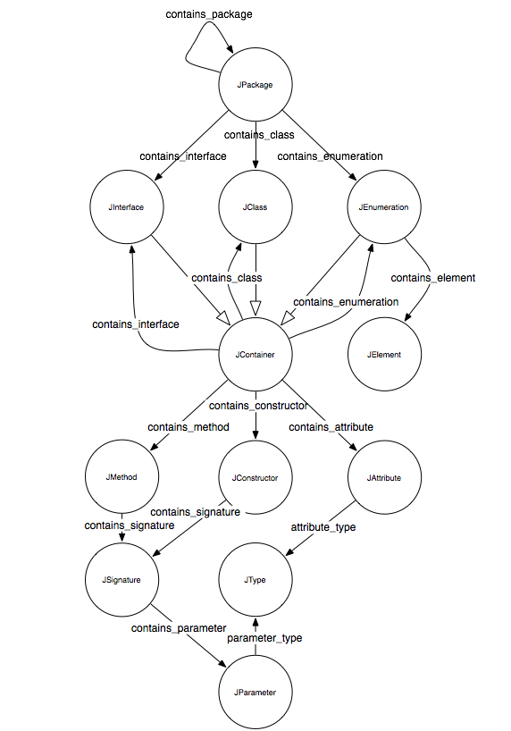

Architecture
The Kabbalah Model
The figure below shows the Kabbalah model.
This model represents the RDF Schema used by RDF Coder to represent Java libraries information.
The name Kabbalah was chosen because after the first drawing of the model resembled
that images representing Kabbalah.

The name Hierarchy
The model uses a naming convention based on a hierarchy to disambiguate the name of every entity stored in it.
TODO: provide examples